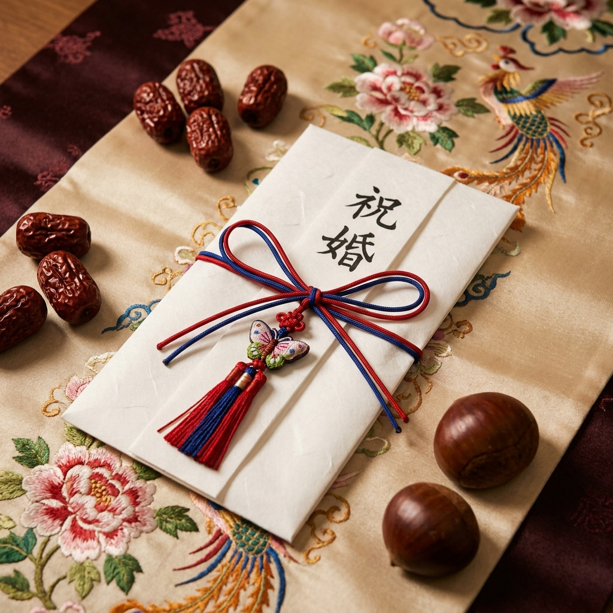

결혼식 폐백 절차 순서와 절값 봉투 쓰는 법 — 친척 어르신 절값 금액대 기준표와 폐백 생략 판단 체크리스트
결혼식 본식이 끝난 후 치러지는 '폐백(幣帛)'은 신부가 시부모님과 시댁 친척 어르신들께 정식으로 첫인사를 올리고 가족의 일원으로 인정받는 유서 깊은 전통 혼례 의례입니다. 최근에는 결혼식 절차 간소화 추세에 따라 폐백을 생략하는 예비부부도 늘고 있지만, 집안의 어르신들이 많이 참석하시거나 전통의 격식을 중시하는 가문에서는 여전히 중요한 통과의례로 진행됩니다.
폐백을 준비하다 보면 절을 올리는 정확한 순서부터 대추와 밤을 던지는 의미, 수모비 챙기기, 친척 어르신들이 주시는 '절값 봉투' 서식과 통상 금액대까지 낯선 점이 많습니다. 오늘 포스팅에서는 폐백 진행 5단계 표준 절차표, 친척 관계별 절값 권장 기준표, 봉투 단자 작성법, 그리고 폐백 생략 여부 판단 체크리스트를 완벽하게 정리해 드립니다.
폐백실에서 고운 한복을 차려입고 시부모님께 큰절을 올리는 신랑 신부의 전통 예절 장면 / AI 제작 이미지
01 | 전통 폐백의 현대적 의미와 요즘 결혼식 트렌드
전통적인 폐백은 신부가 시댁으로 가 시부모님께 예를 올리는 '구고례(舅姑禮)'에서 유래했습니다. 과거에는 엄격하게 시댁 식구들만을 대상으로 진행되었으나, 현대 웨딩홀의 폐백 문화는 양가 평등과 가족 화합을 반영하여 친정 부모님과 친정 친척 어르신께도 함께 절을 올리는 '양가 폐백' 형태로 점차 변화하고 있습니다.
결혼식 문화가 간소화되면서 전체 예식 중 약 40~50% 정도는 폐백을 생략하는 추세입니다. 하지만 폐백은 신랑 신부가 화려한 전통 혼례복(활옷과 사모관대)을 입고 일생에 한 번뿐인 고전적인 가족 기념사진을 남길 수 있고, 집안 어른들의 축복과 덕담을 가까이서 듣는 뜻깊은 자리이기도 합니다.
따라서 일방적으로 생략하거나 강행하기보다는, 양가 부모님의 생각과 친척 참석 여부를 사전에 충분히 상의하여 결정하는 것이 올바른 예절입니다.
02 | 폐백 진행 표준 5단계 절차 순서표
웨딩홀 폐백실에서는 전문 폐백 진행 도우미인 '수모(手母)'님의 안내에 따라 일사천리로 예식이 진행됩니다. 표준 5단계 진행 순서는 다음과 같습니다.
| 단계 |
의례 명칭 |
주요 진행 내용 |
참석 및 주관 |
| 1단계 |
입장 및 착석 |
신랑 신부가 활옷·관복을 착용하고 수모의 안내로 입장, 시부모님이 수석에 착석 |
신랑 신부, 시부모님, 수모 |
| 2단계 |
봉진(捧進)과 수작 |
수모가 신부를 도와 시아버지께 폐백닭/구절판, 시어머니께 육포를 올리고 술잔을 채움 |
수모의 수발, 시부모님 음복 |
| 3단계 |
큰절 올리기 |
신랑 신부가 나란히 시부모님께 4배(현대식은 2배 또는 1배)로 큰절을 올림 |
신랑 신부 동시 절 |
| 4단계 |
덕담 및 대추·밤 던지기 |
시부모님이 덕담을 건넨 후, 신부의 치마폭(흰 명주포)에 대추와 밤을 던져줌 |
시부모님 덕담 및 투척 |
| 5단계 |
절값 전달 및 친척 배례 |
시부모님이 절값 봉투를 건네고, 이어 시댁 조부모·백부·숙부·사촌 순으로 절을 올림 |
친족 서열별 순차 진행 |
시부모님께 절을 마친 후에는 항렬과 나이 순서에 따라 큰아버지, 작은아버지, 고모, 이모 등 친척 어르신들이 차례로 앉아 절을 받고 덕담과 함께 절값을 건네게 됩니다. 항렬이 같은 사촌이나 형제자매와는 맞절이나 가벼운 인사로 예를 마칩니다.
03 | 대추와 밤 던지기의 의미와 받는 요령
폐백의 하이라이트라 할 수 있는 '대추와 밤 던지기'는 자손의 번영과 가문의 번성을 기원하는 상징적인 의식입니다.
- 대추 (붉은 대추): 대추는 통씨가 하나뿐이라 '왕' 또는 '아들'을 상징하며, 가문을 이을 귀한 자손을 뜻합니다.
- 밤 (알밤): 밤은 한 껍질 속에 세 톨이 들어있어 '영의정·좌의정·우의정(삼정승)' 또는 총명하고 살림을 잘 꾸려나갈 '딸'을 상징합니다.
시부모님이 한 움큼 쥐어 던져주실 때, 신랑과 신부는 양손으로 하얀 명주 보자기의 네 귀퉁이를 팽팽하게 펼쳐 잡아 바닥에 떨어지지 않도록 정성껏 받아냅니다. 보자기 안으로 많이 들어올수록 복이 많이 깃든다는 속설이 있으며, 이 대추와 밤은 신혼여행지에 챙겨가거나 신혼집에 가져가 첫날밤 신랑 신부가 함께 나누어 먹는 것이 전통 관례입니다.
04 | 수모비(도우미 수고비) 지급 관례와 준비 요령
웨딩홀 폐백실에서 신랑 신부의 옷매무새를 가다듬어주고 절하는 동작과 술 따르는 순서를 매끄럽게 지도해 주는 분을 '수모(手母)'라고 부릅니다.
수모비는 웨딩홀 필수 부대비용으로 책정되어 있는 경우가 많으며, 통상 7만 원에서 10만 원 선이 관례입니다. 이 비용은 예식장 패키지 정산에 포함되는 경우도 있지만, 관례상 폐백이 끝난 직후 신랑 측이나 신부 측에서 깨끗한 흰 봉투에 현금을 미리 담아두었다가 수모님께 감사의 인사와 함께 직접 건네드리는 경우가 대부분입니다.
폐백 진행 도중 당황하지 않도록 신랑 들러리나 가방순이 친구에게 수모비 봉투를 미리 맡겨두는 것이 좋습니다.

정갈한 한지 봉투에 단정한 서식으로 준비된 전통 폐백 절값 봉투 / AI 제작 이미지
05 | 친척 어르신 관계별 폐백 절값 통상 금액대 기준표
폐백 절을 받는 친척 어르신들은 신랑 신부의 앞날을 축복하는 의미로 '절값'을 봉투에 넣어 건넵니다. 이 금액은 축의금과는 별개로 신혼살림의 밑천으로 쓰라는 격려금의 성격을 띱니다. 통상적인 친족 관계별 절값 금액대 기준표입니다.
| 친족 관계 |
통상 권장 금액대 |
참고 사항 및 관례 |
| 시부모님 (양가 부모님) |
100만 원 ~ 300만 원 선 (가문별 상이) |
신혼여행 경비 보탬이나 첫 살림 지원금 성격 |
| 조부모님 (친조부모·외조부모) |
50만 원 ~ 100만 원 선 |
가장 큰 어른으로서의 덕담과 축복 |
| 직계 백부·숙부 (큰아버지·작은아버지) |
20만 원 ~ 50만 원 선 |
가장 통상적인 친척 어르신 기준 금액 |
| 고모·이모·삼촌 |
20만 원 ~ 30만 원 선 |
축의금을 이미 냈더라도 절값으로 10~20만 원 별도 준비 |
| 사촌 형제·자매 |
절값 생략 또는 5만~10만 원 |
절값보다는 맞절 후 가벼운 선물이나 덕담 교환 |
💡 어르신 팁: 축의금을 이미 축의대에 낸 친척 어르신이라도 폐백실에 들어오실 때는 10만~20만 원 정도의 현금을 새 봉투에 미리 준비해 오시는 것이 신랑 신부에게 덜 무안한 관례입니다. 만약 봉투를 미리 준비하지 못하셨다면 현장에서 지갑의 현금을 봉투 없이 드리기보다는 폐백실에 구비된 흰 봉투를 활용하세요.
06 | 폐백 절값 봉투 작성법 — 한글·한자 단자 문구와 봉투 쓰는 법
폐백 절값을 담는 봉투는 일반 축의금 봉투와 쓰는 방식이 비슷하지만 몇 가지 정중한 예절이 있습니다.
✉️ 절값 봉투 앞면 문구 예시
- 祝 結婚 (축 결혼): 가장 대중적이고 널리 쓰이는 한자 문구.
- 祝 結의 (축 결의) / 祝 華婚 (축 화혼): 남의 결혼을 축하할 때 쓰는 품격 있는 문구.
- 한글 표기: "결혼을 진심으로 축하합니다", "행복한 가정 이루길 바란다" 등 덕담 한 문장을 봉투 앞면에 한글로 정갈하게 적어도 매우 훌륭합니다.
✉️ 절값 봉투 뒷면 및 속지(단자) 작성법
- 뒷면 좌측 하단: 보내는 분의 관계와 성명을 적습니다. (예: `숙부 홍길동`, `고모부 김철수`)
- 속지(단자): 격식을 갖추려면 한지에 금액(예: `金 貳拾萬圓整`)과 날짜, 성명을 적어 돈을 감싼 뒤 봉투에 넣습니다.
- 주의점: 절값 봉투는 봉투 입구를 풀로 붙이지 않고 열어두거나 접어두는 것이 관례입니다.
07 | 절값 봉투는 언제 누구에게 전달하나 — 신랑 신부 관리 관례
폐백 절차 중에 친척 어르신들이 건네주시는 절값 봉투는 신랑 신부 앞 목재 상(폐백상)에 놓이거나 수모님이 대신 쟁반에 모아둡니다.
전통적으로는 폐백 절값은 '시어머니가 신부에게 주는 신혼여행 용돈'이라는 개념이 강하여, 시부모님이 모아진 절값을 모두 신부 가방에 넣어주는 것이 일반적인 관례입니다. 그러나 최근에는 절값 총액을 합산하여 신혼여행 경비로 함께 쓰거나, 가전·가구 구입비, 혹은 양가 부모님 선물 비용으로 공동 사용하는 부부가 대부분입니다.
폐백이 끝나면 봉투가 섞여 누가 얼마를 주었는지 헷갈릴 수 있으므로, 폐백실을 나오자마자 가방순이나 신랑이 봉투 뒷면의 이름을 확인하고 수첩이나 스마트폰에 즉시 기록해 두어야 나중에 친척들께 감사 인사를 드릴 때 실수가 없습니다.
08 | 요즘 폐백 생략하는 이유와 시댁과의 사전 조율 대화법
폐백을 생략하는 가장 큰 이유는 '시간과 비용 절감'입니다. 폐백 음식 주문 비용(20~40만 원), 폐백실 대여료 및 수모비(10~15만 원), 한복 대여비(인당 15~30만 원)까지 합치면 폐백 하나에만 70~100만 원 이상의 추가 지출이 발생합니다.
또한 본식 후 폐백을 진행하면 30~40분의 시간이 소요되어, 연회장(피로연장)에서 하객들에게 인사드릴 시간이 턱없이 부족해지는 문제가 발생합니다.
💡 시댁 어른과의 조율 팁: 신부가 "폐백 안 하고 싶어요"라고 직접 말하기보다는, 신랑이 먼저 부모님께 "어머니, 요즘은 하객들이 밥 먹고 일찍 가셔서 피로연 인사가 더 중요하다고 합니다. 폐백 음식 비용을 아껴서 양가 부모님 좋은 옷 한 벌씩 해드리고 싶은데 어떠세요?"와 같이 배려심 있는 화법으로 의사를 여쭙는 것이 가장 원만합니다.
09 | 우리 결혼식 폐백 진행 vs 생략 결정 체크리스트
폐백 진행 여부를 놓고 고민 중인 예비부부를 위한 자가진단 체크리스트입니다.
📋 폐백 진행 여부 최종 결정 체크리스트
- [ ] 시댁 어르신(조부모, 친척) 참석자가 많은가? → 많다면 폐백 진행 추천.
- [ ] 웨딩홀 연회장 이용 시간(식사 시간)이 넉넉한가? → 2시간 미만 단독홀이면 하객 인사를 위해 생략 권장.
- [ ] 신랑 신부 양가가 이미 피로연 한복을 맞추거나 대여했는가? → 한복이 있다면 사진 촬영 겸 진행 유리.
- [ ] 양가 부모님이 폐백 생략에 완전히 동의하셨는가? → 한 분이라도 서운해하시면 간소화하여 진행하는 것이 뒷말 예방.
- [ ] 친정 부모님도 함께 절을 받는 '양가 폐백'에 동의하는가? → 시댁의 양해가 있다면 양가 화합의 장으로 진행.
전통의 멋과 현대적 실용성 사이에서 양가 가족이 모두 웃을 수 있는 최선의 선택을 하시어, 행복하고 축복 가득한 결혼식을 완성하시기 바랍니다.
#결혼식폐백
#폐백절차
#폐백절값
#절값봉투
#폐백생략
#폐백수모비
#대추밤던지기
#폐백음식
#전통혼례예절
#결혼준비체크리스트